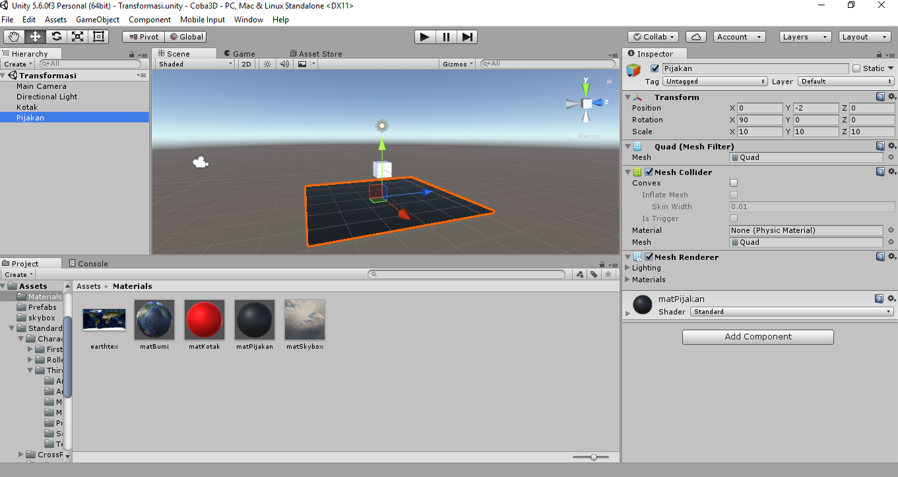
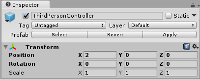
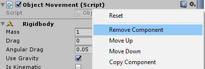
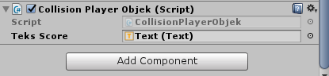
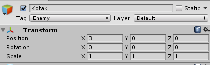
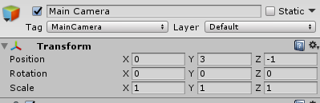
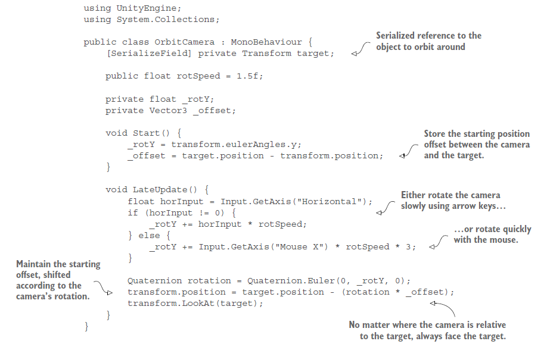

9. Translasi Objek 3D
Pendahuluan
Saat ini, kita sudah di penghujung pembuatan game 3D. Meskipun tidak banyak yang dipelajari dari pembuatan game 3D, kamu masih dapat belajar sendiri lebih lanjut. Pada pertemuan ini, kita akan kembali membuat beberapa program yang terkait tengan interaksi objek 3D. Pada unity transformasi yang ada pada objek game 2D atau 3D tidak jauh berbeda karena pada dasarnya unity dirancang untuk game 3D. Mari kita mulai dengan melanjutkan project “Coba3D”.
Translasi Objek 3D
Masih ingatkah kamu pada pertemuan ke-3 dan 4 tentang transformasi dan kendali (control)? Jika masih coba buka kode program “ObjectMovement.cs”. Disana kita mendefinisikan sendiri beberapa trigger vektor seperti vektor kekanan, kekiri, keatas, kebawah, maju, dan mundur. Disana terlihat hanya ada satu vektor posisi yang hanya memiliki nilai 1 atau -1. Jika menggunakan sistem kaidah tangan kiri posisi y = 1 digunakan untuk triger nilai positif yang disimbolkan oleh arah jari telunjuk yang menunjuk ke atas. Untuk nilai x positif mengikuti arah ibu jari yang menunjuk ke kanan. Terakhir, nilai z positif mengikuti arah jari tengah yang menunjuk kearah depan.
PRAKTIKUM:
- Copy dan paste file ObjectMovement.cs pada project “Latihan3_2D” kedalam project “Coba3D”.
- Buat scene baru dengan nama Transformasi.
- Buat objek Cube dan rename dengan nama “Kotak” dengan posisi x,y,z = 0.
- Masukkan kode ObjectMovement kedalam objek Kotak.
- Dahulu didalam method Update() kita sudah membuat kode program untuk translasi kekanan, kekiri, keatas, dan kebawah yang masing-masing memiliki kendali keyboard panah kanan, kiri, atas, dan bawah. Sekarang kita akan tambahkan kendali keyboard “W” untuk maju dan “S” untuk mundur. Tambahkan kode berikut didalam method Update():
if (Input.GetKey(KeyCode.W)) {
transform.position = transform.position + (maju * speed * Time.deltaTime);
}
if (Input.GetKey(KeyCode.S)) {
transform.position = transform.position + (mundur * speed * Time.deltaTime);
}
pastikan bahwa Vector 3 maju sudah didefinisikan terlebih dahulu.
- Jalankan unity dan coba untuk menekan W dan S pada keyboard.
KUMPULKAN:
Screenshoot game tab coba tekan salah satu W atau S. Simpan dengan nama sc_11_01.jpg
Rotasi Objek 3D
Rotasi objek 3D sebetulnya sama dengan rotasi 2D yang pernah kita lakukan. Pada rotasi 2D yang kita lakukan adalah memutar kekanan dan kekiri. Sebetulnya memutar kekanan dan kekiri pada rotasi 2D yang pernah kita lakukan berbeda makna dengan rotasi 3D. Pada rotasi 3D hal itu disebut dengan roll (Lihat modul praktikum ke-3. Hal tersebut dikarenakan pada game 2D tidak pernah ada rotasi yaw atau pitch. Berikut adalah kode program untuk pitch,yaw,dan roll (tidak menggunakan method Rotate melainkan toQuartenion yang pernah kita buat sendiri di praktikum ke-3).
Rotasi Pitch :
transform.rotation = transform.rotation * toQuaternion (kekanan * speedRotasi * Time.deltaTime); //pitch keatas
atau
transform.rotation = transform.rotation * toQuaternion (kekiri * speedRotasi * Time.deltaTime); //pitch kebawahRotasi yaw :
transform.rotation = transform.rotation * toQuaternion (kebawah * speedRotasi * Time.deltaTime); //yaw kekanan
atau
transform.rotation = transform.rotation * toQuaternion (keatas * speedRotasi * Time.deltaTime); //yaw kekiriRotasi roll :
transform.rotation = transform.rotation * toQuaternion (maju * speedRotasi * Time.deltaTime); //roll kekiri
atau
transform.rotation = transform.rotation * toQuaternion (mundur * speedRotasi * Time.deltaTime); //roll kekananPRAKTIKUM:
- Tetap pada script ObjectMovement.
- Pada bagian Update(), dahulu kita membuat rotasi dengan tombol D dan A untuk rotasi 2D (roll).
- Sekarang, ganti kode rotasi didalam Update dengan seluruh jenis rotasi pitch,yaw, dan roll:
if (Input.GetMouseButton (0)) {
if (Input.GetKey (KeyCode.J))
//buat kode roll kekanan
if (Input.GetKey (KeyCode.G))
//buat kode roll kekiri
if (Input.GetKey (KeyCode.Y))
//buat kode pitch keatas
if (Input.GetKey (KeyCode.H))
//buat kode pitch kebawah
if (Input.GetKey (KeyCode.T))
//buat kode yaw kekiri
if (Input.GetKey (KeyCode.U))
//buat kode yaw kekanan
}
else
{
//biarkan kosong
} - Isikan kode program yang di komentari dengan benar! (boleh menggunakan Quartenion.Euler atau method toQuartenion atau Vector3.Rotate, pilih salah satu)
- Masukan script ObjectMovement kedalam komponen dari objek Kotak.
- Jalankan unity, dan coba gerakkan rotasi objek dengan cara klik dan tahan mouse dan tekan G atau J atau yang lain sesuai aturan rotasi diatas.
KUMPULKAN:
Screenshoot game tab. Simpan dengan nama sc_11_02.jpg
Physic Engine Objek 3D
Physic Engine untuk objek 3D menggunakan Rigidbody dan Collider. Namun demikian, mulai unity 5 keatas terdapat tambahan physic engine yaitu physic material. Physic material atau Physic material 2D (untuk objek 2D) untuk membuat efek permukaan objek misalnya ketika ingin membuat objek tersebut memantul. Physic material tidak akan diterangkan lebih lanjut, tetapi dapat dipelajari di https://docs.unity3d.com/Manual/class-PhysicMaterial.html .
Untuk objek 3D, collider dan rigid body tidak menggunakan kata “2D” pada penamaan komponen tersebut. Terdapat 7 collider non legacy yang dapat diterapkan pada objek 3D, yaitu: box collider, capsule collider, mesh collider, spatial mapping collider, sphere collider, terrain collider, dan wheel collider. Dari nama-nama collider tersebut sudah terbayangkan bentuk objek yang akan dilingkupi oleh collider itu, misalnya box collider untuk objek yang berbentuk kubus. Pada objek-objek primitive, saat kita menambahkannya pada scene, secara default biasanya sudah memiliki collider. Tetapi belum miliki rigidbody.
PRAKTIKUM:
Klik objek Kotak pada project Coba3D.
Tambahkan component Rigidbody .
Pastikan Use gravity tercentang atau gravity scale = 1 (pada unity versi 5.5 kebawah).
Jalankan unity dan lihat apakah objek kotak sudah terjatuh atau belum.
Jika sudah terjatuh. Hentikan unity.
Tambahkan game objek penompang berbentuk Quad dan rename dengan nama Pijakan.
Posisikan Pijakan pada x=0,y=-2,z=0 dan rotasi x=90,y dan z=0.
Scale Pijakan dengan nilai x,y,z = 10.
Buat material baru dengan standard shader dengan nama “matPijakan”, beri warna hitam.
Masukkan material matPijakan kedalam komponen objek Pijakan. Seperti gambar dibawah ini.
Tambahkan object ThirdPersonController ke scene (Masuk pada Project Window, Assets->Standard Asset->Characters->ThirdPersonCharacter->Prefabs)
Pastikan object ThirdPersonController memiliki transformasi seperti gambar berikut:
Klik objek Kotak pada hierarchy window dan lihat pada Inspector. Hilangkan komponen script ObjectMovement dari objek kotak tersebut.
Jalankan unity dan kendalikan objek ThirdPersonController untuk menabrak objek kotak.
KUMPULKAN:
Screenshoot game tab saat ThirdPersonController menabrak objek kotak. Simpan dengan nama sc_11_03.jpg
Deteksi Tumbukan Objek 3D
Syarat deteksi tumbukan adalah terdapat komponen rigidbody dan collider pada kedua objek yang akan bertumbukan. Setelah kedua komponen itu ada, selanjutnya kita dapat menambahkan kode program dengan method OnCollisionEnter(), OnCollisionStay(), OnCollisionExit() atau OnTriggerEnter(), OnTriggerStay(), OnTriggerExit().
PRAKTIKUM:
- Klik objek Kotak pada project Coba3D.
- Buat tag baru dengan nama “enemy” dan atur pada objek Kotak.
- Buat UI text dan rename dengan nama “TextScore”. Biarkan Canvas apa adanya.
- Isikan pada Inspector Textscorem, width = 500, height = 250, Text = “Score = 0”.
- Tambahkan script baru pada objek ThirdPersonController dengan nama CollisionPlayerObjek.
- Tambahkan variabel teksScore pada script CollisionPlayerObjek dengan tipe Text (pastikan sudah menggunakan using UnityEngine.Text.
public Text teksScore; - Tambahkan variabel score pada script CollisionPlayerObjek dengan tipe int.
int score = 0; - Tambahkan method OnCollisionEnter pada script CollisionPlayerObjek.
void OnCollisionEnter(Collision coll)
{
if (coll.collider.tag == "Enemy") {
score++;
teksScore.text = "Score = "+score.ToString ();
Destroy (coll.gameObject);
}
}Masukkan objek teksScore kedalam variabel teksScore pada inspector ThirdPersonController.
Jalankan unity dan coba tumbukkan ThirdPersonController dengan Kotak.
KUMPULKAN:
Screenshoot game tab setelah ThirdPersonController menumbuk objek kotak. Simpan dengan nama sc_11_04.jpg
Orbit Camera pada karakter Player (Opsional)
Pernahkan bermain game God Of War? Jika pernah, terdapat scene dimana player sedang berjalan pada kayu kecil dan dibawahnya adalah jurang api. Sekarang kita akan mencoba untuk membuat hal itu dengan kendali orang-ketiga dan arah dari mouse.
PRAKTIKUM:
Klik objek Kotak pada project Coba3D. Posisikan seperti gambar berikut:
Klik objek ThirdPersonController dan posisikan seperti gambar berikut:

Klik objek Main Camera dan posisikan seperti gambar berikut:
Tambahkan script baru dengan nama “OrbitCamera” pada objek Main Camera.
Jalankan Unity dan analisa apa yang terjadi.
KUMPULKAN:
Screenshoot game tab setelah ThirdPersonController menumbuk objek kotak. Simpan dengan nama sc_11_05.jpg
Latihan
Jika sudah selesai praktikum, silahkan kembangkan game yang ada pada praktikum kali ini dengan pengetahuan yang sebelumnya sudah dipelajari dan kreativitas kamu. Buat game third-person control dengan berbagai macam interaksi.
KUMPULKAN:
Screenshoot game tab dimana game yang dibuat sudah merupakan modifikasi dari praktikum kali ini. Simpan dengan nama sc_11_06.jpg.
REFERENSI
- Hocking, J. (2015). Unity in action. Manning Publications,.
- De Byl, P. (2017). Holistic Mobile Game Development with Unity Second Eds. CRC Press.
- Blackman, S., & Tuliper, A. (2016). Learn Unity for Windows 10 Game Development. Apress.
- https://docs.unity3d.com/ScriptReference/MonoBehaviour.OnTriggerEnter.html
- https://docs.unity3d.com/ScriptReference/Collider.OnCollisionEnter.html
Mekanisme Pengumpulan Praktikum Mingguan
Untuk setiap mahasiswa: Buat 1 folder beri nama NIM lengkap. Masukkan file screenshot sc_11_01.jpg, sc_11_02.jpg, sc_11_03.jpg, sc_11_04, sc_11_05 dan sc_11_06.jpg . Kemudian rar atau zip folder NIM kamu tadi dan kirimkan ke ketua kelas.
Contoh: A11200904997.rar
Untuk Ketua Kelas: Siapkan folder dengan nama Kode Kelas “_11” yang berisi kumpulan praktikum setiap mahasiswa. Lalu buat rar atau zip dan kirimkan ke email dosen.
Contoh: A114401_11.rar